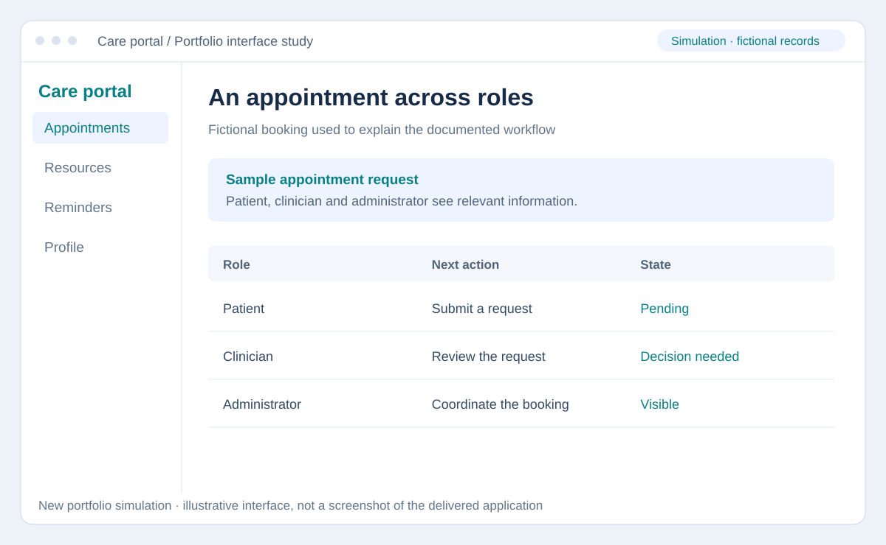
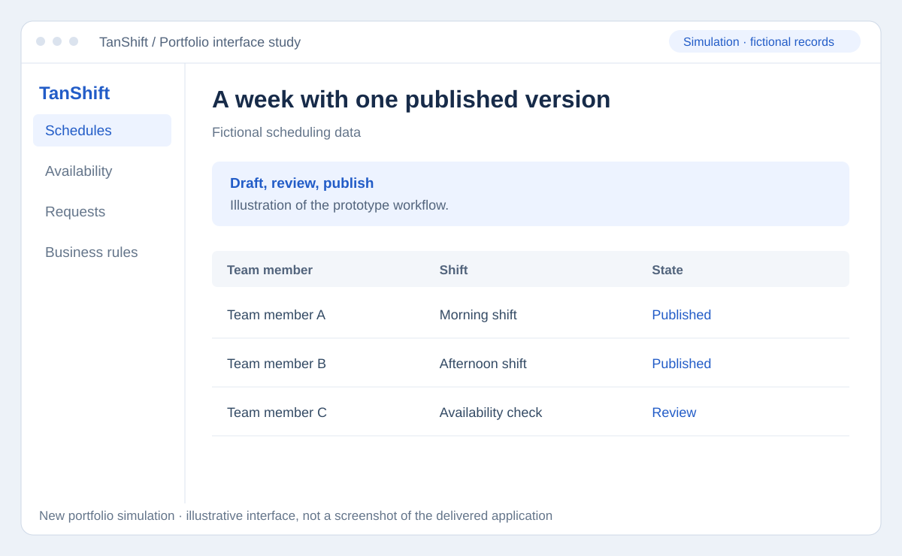
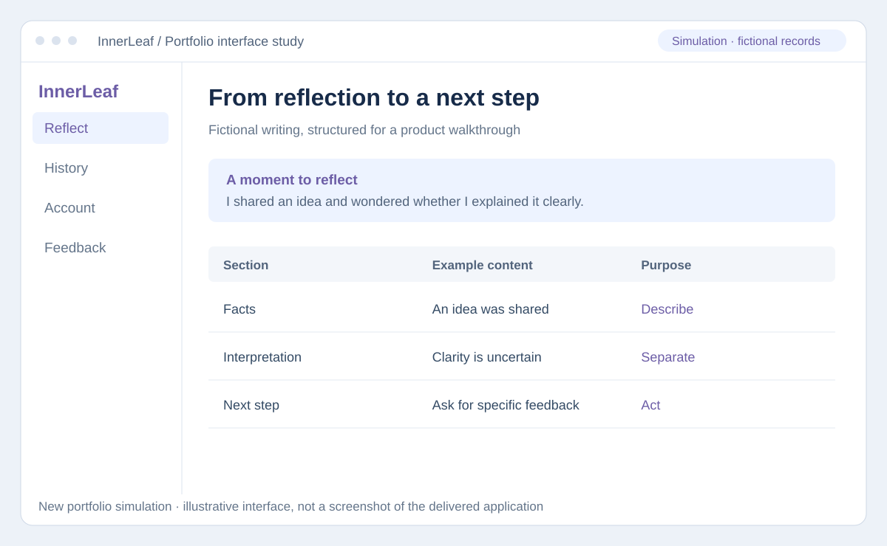
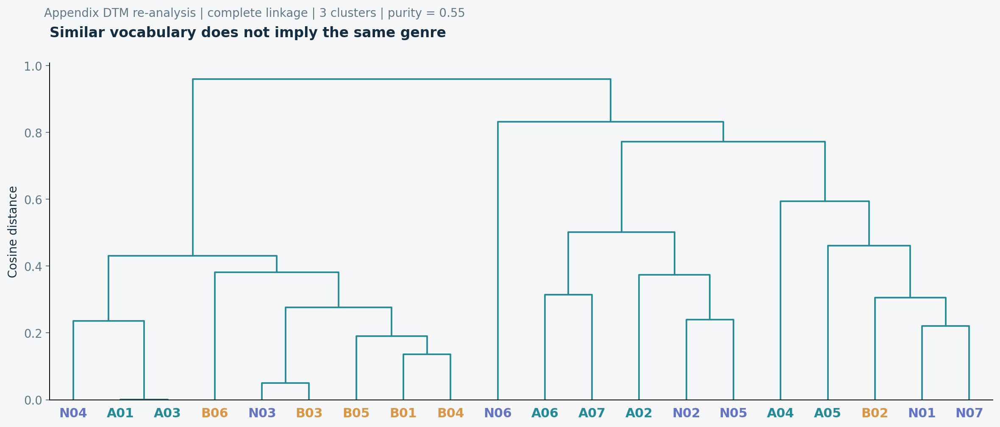
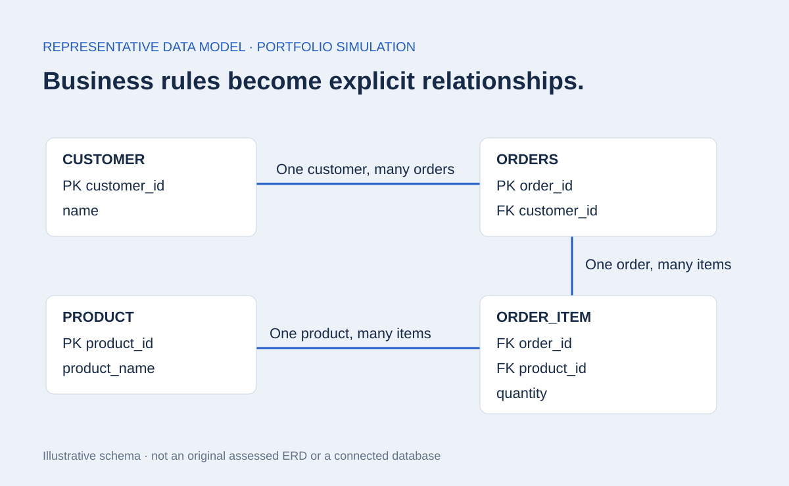

View 6 actual images
View 6 actual images
Agencia Change Engine
Guiding new users through a real change platform.
My contributionGetting Started, onboarding UX, terminology and UAT preparation.
Early-career Business / Systems Analyst
Guang Quan Tan (William)
I turn business needs into clear workflows, useful models and testable requirements. My work connects client onboarding, data analysis and hands-on systems delivery.
Selected work
Start with four cases that show how I analyse needs, structure a solution and explain the decisions.
10 projects
View 6 actual imagesGuiding new users through a real change platform.
My contributionGetting Started, onboarding UX, terminology and UAT preparation.
 View 5 visuals
View 5 visualsTurn constraints into a practical allocation.
My workExcel models, optimisation, sensitivity analysis and decision interpretation.
 View 3 visuals
View 3 visualsHelp friends move from indecision to a plan.
My contributionQuestionnaire, persona, user stories, storyboard, sketches and heuristic review.
 View 3 visuals
View 3 visualsConnect operational processes with investment judgement.
My contributionSAP practice, process analysis and team leadership of an ERP business case.
Healthcare workflows, working prototypes, analytics and governance.

View 3 visualsPatient, clinician and administrator workflows, with a review of acceptance and handover evidence.
Role-based workflows · Documentation review
Read case study
View 2 visualsStaff scheduling with draft/published rosters, availability and manager-reviewed requests.
Next.js · PostgreSQL · Business rules
Read case study
View 2 visualsStructured AI reflection flows, user/admin boundaries and repository-based acceptance tests.
Next.js · Supabase · Playwright
Read case study
View 3 visualsExplore a 20-document corpus through clustering, sentiment and network analysis.
R · Text mining · Statistical interpretation
Read case study View 2 visuals
View 2 visualsTranslate risk themes into proposed process controls, accountable roles and review evidence.
COBIT · ITIL · Risk-to-control mapping
Read case study
View 2 visualsConnect business rules with entities, normalisation, integrity constraints and SQL queries.
Oracle SQL · ERD · Data integrity
Read case studyEach case labels individual work, team delivery and evidence limitations. Charts and sketches are project artefacts. Interface simulations use fictional records and are labelled separately from original work.
Capabilities in practice
Follow a capability to a specific example, rather than a list of tools alone.
User journeys, expected behaviour and acceptance scenarios that make an ambiguous request reviewable.
Evidence: client onboardingModels that make costs, constraints, uncertainty and the limits of a recommendation visible.
Evidence: decision modellingBusiness rules, relational data and implemented workflows, with prototype limitations stated clearly.
Evidence: scheduling prototype03 / Commercial experience
At CS TAN Technology & Enterprise, my responsibilities grew across user support, analysis and commercial operations.
Explore the commercial caseCS TAN Technology & Enterprise
B2B customer communication, supplier sourcing, quotations, invoices and order coordination. Continued remote support while studying in Australia.
CS TAN Technology & Enterprise
Excel analysis of sales, stock movement, pricing and demand to support purchasing and product decisions.
CS TAN Technology & Enterprise
First-level support for devices, business software, email and connectivity, alongside digital records and documentation.
Lazada / Shopee
Product listings and online operations, with experience maintaining 100+ listings.
04 / A little about me
I’m Guang Quan Tan (William), a Monash University Bachelor of Information Technology graduate in Business Information Systems.
Commercial work taught me to pay attention to the small things: unclear requests, scattered records and the follow-up that keeps an operation moving. My projects bring that same attention to software.
Working toolkit
Applied across commercial work, coursework and personal projects.
Requirements · Process mapping · UAT · Excel Solver · Figma · Miro · Trello
SQL · Oracle · PostgreSQL · ERD · R · Decision modelling
Next.js · TypeScript · CakePHP · Supabase · GitHub · Playwright
Let’s connect
Discuss a Business Analyst, Systems Analyst or graduate technology opportunity, or request a walkthrough of the project evidence.
tanstrifelife@gmail.com